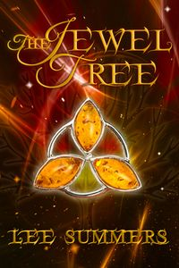

The Jewel Tree
At the heart of THE JEWEL TREE is an heirloom so precious that the last remaining members of the Ryder family will do almost anything to keep it in their possession. But how long should a young girl work to earn back the emblem of her mother's soul? And is any task to menial?When Leda sees the hummingbird charm dangling...
Download or read The Jewel Tree in PDF formats. You may also find other subjects related with The Jewel Tree.
- Filetype: PDF
- Pages: 90 pages
- ISBN: 9781546896777 / 0
BywrgYdeCsuW.pdf